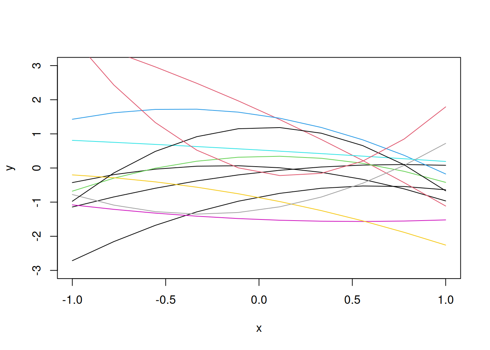
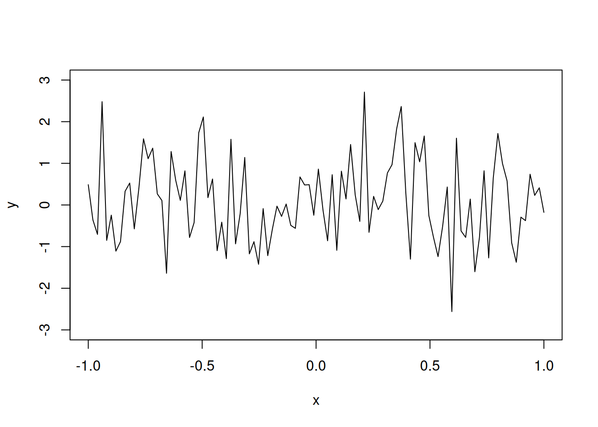
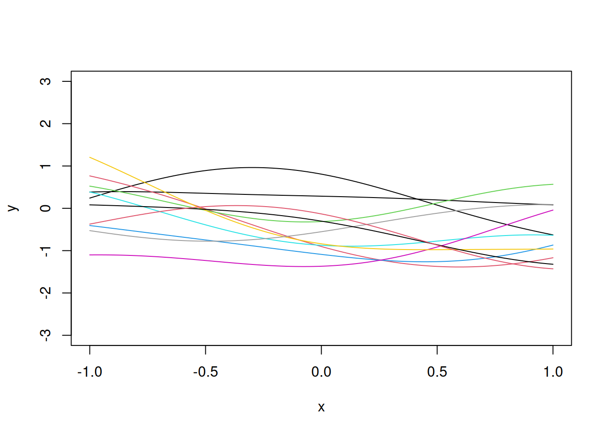
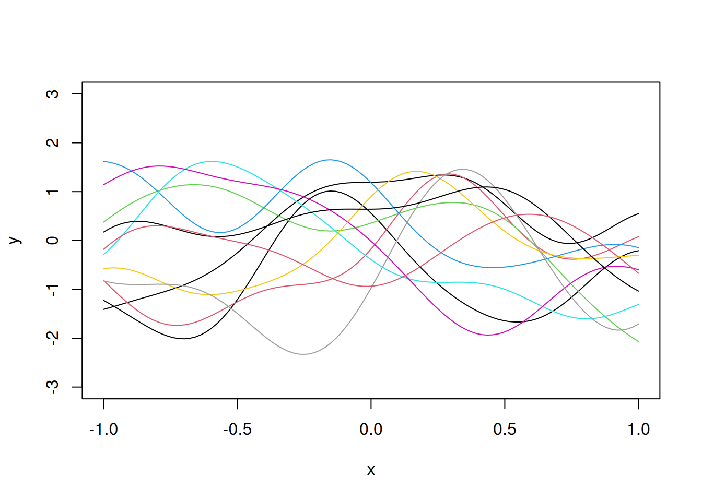
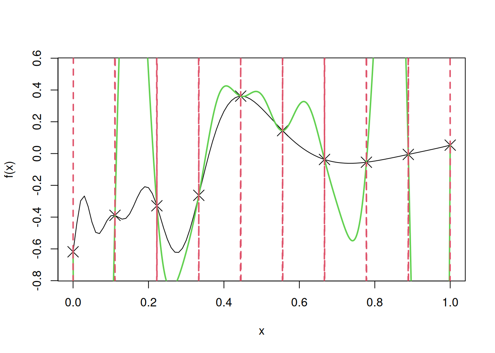

curve(1/(1+x^2), from=-4, to=4, ylim=c(-.7,1))5 Computer model
Assume that the true computer model is the following:
We will consider potential methods to replace the computer model above with a metamodel or a surrogate model.
5.1 Polynomial interpolation
Below is an example of a \(7\)-point polynomial interpolator.
curve(1/(1+x^2), from=-4, to=4, ylim=c(-.7,1))
x=seq(-4,4,length=7)
y=1/(1+x^2)
X=as.matrix(cbind(1,x,x^2,x^3,x^4,x^5,x^6))
a=solve(X,y)
u=seq(-4,4,length=100)
yhat=u
for(i in 1:100)
yhat[i]=sum(c(1,u[i],u[i]^2,u[i]^3,u[i]^4,u[i]^5,u[i]^6)*a)
lines(u,yhat, col=2, lty=2, lwd = 2)
points(x,y,col=2)Notice that the polynomial interpolation model tends to be unstable near the edges, this is called Runge’s phenomenon.
The instability increases as the degree of the polynomial increases. Consider the same example if 9 equally-spaced points are considered, instead of 7.
curve(1/(1+x^2), from=-4, to=4, ylim=c(-.7,1))
x=seq(-4,4,length=9)
y=1/(1+x^2)
X=as.matrix(cbind(1,x,x^2,x^3,x^4,x^5,x^6,x^7,x^8))
a=solve(X,y)
u=seq(-4,4,length=100)
yhat=u
for(i in 1:100)
yhat[i]=sum(c(1,u[i],u[i]^2,u[i]^3,u[i]^4,u[i]^5,u[i]^6, u[i]^7,u[i]^8)*a)
lines(u,yhat, col='blue', lty=3, lwd = 2)
points(x,y,col="blue")5.2 Splines
Let us consider splines as the metamodel to replace the same computer model considered above.
curve(1/(1+x^2), from=-4, to=4, ylim=c(-.7,1))
# Splines with 7 points
x=seq(-4,4,length=7)
y=1/(1+x^2)
points(x,y,col=2)
a=splinefun(x,y,method="natural")
curve(a,add=T,col=2, lwd = 2)
# Splines with 9 points
x=seq(-4,4,length=9)
y=1/(1+x^2)
points(x,y, pch=3,col=3)
a=splinefun(x,y,method="natural")
curve(a,add=T,col=3, lty=2, lwd = 2)
We observe that splines fit the points smoothly, which is desired. However, splines do not scale up and are difficult to fit in case of higher dimensions.
5.3 Random functions
We will now adopt a statistical approach to replace the computer model with a metamodel, where we view the deterministic computer model as a realization from a stochastic process.
Let us consider quadratic functions as the random functions to develop the metamodel.
x=seq(-1,1,length=10)
b=rnorm(3)
y=b[1]+b[2]*x+b[3]*x^2
plot(x,y,"l", ylim=c(-3,3))
b=rnorm(3)
y=b[1]+b[2]*x+b[3]*x^2
lines(x,y,"l")
for(i in 1:10)
{b=rnorm(3)
y=b[1]+b[2]*x+b[3]*x^2
lines(x,y,"l",col=i)}
We want a more flexible random function, so that a flexible computer model could correspond to a realization from that random function.
Suppose \(y(x_i) \sim N(0, \sigma^2)\). Let us plot a realization of this model for \(\sigma^2 = 1\).
N=100
x=seq(-1,1,length=N)
y=rnorm(N)
plot(x,y,"l", ylim=c(-3,3))
Although the function does seem to be flexible, it is not smooth. We want to have a smooth function, which is also flexible, as the metamodel.
The reason why the above realization of a computer model is not smooth is because the response values are not correlated. The sample paths for the above random function follow the multivariate normal distribution with the identity matrix as the covariance matrix, i.e.,
\[\textbf{y} \sim N_{100}(\textbf{0}, \textbf{I}),\]
where \(\textbf{I}\) is the \(100 \times 100\) identity matrix.
For smooth functions, adjacent points \(y(x)\) and \(y(x + \Delta)\) should be positively correlated.
Let us introduce correlation between response values to make the realizations of the computer models more smooth.
Let us assume that the response values have an underlying multivariate normal distribution, with a covariance matrix that is not the diagonal matrix.
For example, consider the covariance matrix \(R\). where:
\[\textbf{R} = \exp\{-\theta(x_i-x_j)^2\}_{100 \times 100}\] In the above correlation function, we can control the flexibility by changing the value of \(\theta\). The higher the value of \(\theta\), the lesser is the correlation between the response values, for a given distance between inputs, and the higher is the flexibility of the function. Thus, this correlation function can provide the desired level of flexibility while also providing smoothness in the function.
Then,
\[\textbf{y} \sim N(0, \textbf{R})\] Let us visualize 10 realizations from the above random function to see the smoothness.
If \(\textbf{z} \sim N(\textbf{0}, \textbf{I})\), then \(\textbf{y} = \textbf{R}^{1/2}\textbf{z}\).
Proof: Given \(y = \textbf{R}^{1/2}\textbf{z}\),
\(E(\textbf{y}) = \textbf{R}^{1/2}E(\textbf{z}) = 0\)
\(Var(\textbf{y}) = Var(\textbf{R}^{1/2}\textbf{z})\)
\(\implies Var(\textbf{y}) = \textbf{R}^{1/2}Var(\textbf{z})R^{1/2})\)
(Refer to equation 313 in the matrix cookbook)
\(\implies Var(\textbf{y}) = \textbf{R}^{1/2}\textbf{I}\textbf{R}^{1/2})\)
\(\implies Var(\textbf{y}) = \textbf{R}\)
E=as.matrix(dist(x, diag=T, ,upper=T))
# Correlation matrix R
R=exp(-0.5*E^2)
eig=eigen(R)
R.sqrt=eig$vec%*%diag(sqrt(eig$val+10^(-10)))%*%t(eig$vec)
z=rnorm(N)
y=R.sqrt%*%z
plot(x,y,"l", ylim=c(-3,3))
for(i in 1:10)
lines(x,R.sqrt%*%rnorm(N),col=i)
We can increase the flexibility by increasing the value of the correlation parameter \(\theta\) to say \(\theta = 5\), as shown below.
E=as.matrix(dist(x, diag=T, ,upper=T))
# Correlation matrix R
R=exp(-5*E^2)
eig=eigen(R)
R.sqrt=eig$vec%*%diag(sqrt(eig$val+10^(-10)))%*%t(eig$vec)
z=rnorm(N)
y=R.sqrt%*%z
plot(x,y,"l", ylim=c(-3,3))
for(i in 1:10)
lines(x,R.sqrt%*%rnorm(N),col=i)
5.4 Simple Kriging
5.4.1 Correctly guessed \(\mu\) and \(\theta\), estimated \(\sigma^2\)
Let us use simple kriging to develop a metamodel for the following one dimensional computer model, and visualize the fit, along with uncertainty.
# Computer model
f=function(x)
sin(30*(x-.9)^4)*cos(2*(x-.9))+(x-.9)/2
n=10
D=seq(0,1,length=n)
y=f(D)
curve(f(x),from=0,to=1, ylim = c(-0.75, 0.55))
points(D,y,pch=4,cex=2)
E=as.matrix(dist(D, diag=T, upper=T))
theta=100
R=exp(-theta*E^2)
mu=0
I=diag(n)
Rinv=solve(R+10^(-10)*I)
coef=Rinv%*%(y-mu)
basis=function(h)
exp(-theta*h^2)
r=function(x)
{
vec=basis(x-D)
return(vec)
}
fhat=function(x)
mu+t(r(x))%*%coef
sigma2=drop(1/n*t(y-mu)%*%Rinv%*%(y-mu))
f.var=function(x)
sigma2*(1-t(r(x))%*%Rinv%*%r(x))
N=1000
u=seq(0,1,length=N)
y.pred=y.low=y.high=numeric(N)
for(i in 1:N)
{
y.pred[i]=fhat(u[i])
SD=sqrt(f.var(u[i]))
y.low[i]=y.pred[i]-2*SD
y.high[i]=y.pred[i]+2*SD
}
lines(u,y.pred,col=3,lwd=2)
lines(u,y.low,lty=2,col=2,lwd=2)
lines(u,y.high,lty=2,col=2,lwd=2)test=uLet us find the root mean squared error (RMSE) on test data to evaluate the model accuracy in case of simple kriging.
# RMSE
sqrt(mean((apply(cbind(test),1,fhat)-f(test))^2))[1] 0.093188195.4.2 Mis-specified \(\mu\), correctly guessed \(\theta\), estimated \(\sigma^2\)
Note that we assumed the mean \(\mu\) to be \(\mu = 0\). In case our guess for \(\mu\) was incorrect, it would have resulted in a worse model. Let us visualize the fit, and confidence intervals, if our guess for \(\mu\) was \(\mu = 100\).
curve(f(x),from=0,to=1, ylim = c(-0.75, 0.55))
points(D,y,pch=4,cex=2)
E=as.matrix(dist(D, diag=T, upper=T))
theta=100
R=exp(-theta*E^2)
mu=100
I=diag(n)
Rinv=solve(R+10^(-10)*I)
coef=Rinv%*%(y-mu)
basis=function(h)
exp(-theta*h^2)
r=function(x)
{
vec=basis(x-D)
return(vec)
}
fhat=function(x)
mu+t(r(x))%*%coef
sigma2=drop(1/n*t(y-mu)%*%Rinv%*%(y-mu))
f.var=function(x)
sigma2*(1-t(r(x))%*%Rinv%*%r(x))
N=1000
u=seq(0,1,length=N)
y.pred=y.low=y.high=numeric(N)
for(i in 1:N)
{
y.pred[i]=fhat(u[i])
SD=sqrt(f.var(u[i]))
y.low[i]=y.pred[i]-2*SD
y.high[i]=y.pred[i]+2*SD
}
lines(u,y.pred,col=3,lwd=2)
lines(u,y.low,lty=2,col=2,lwd=2)
lines(u,y.high,lty=2,col=2,lwd=2)
Let us find the root mean squared error (RMSE) on test data to evaluate the model accuracy in case of simple kriging, with mis-specified \(\mu\).
# RMSE
sqrt(mean((apply(cbind(test),1,fhat)-f(test))^2))[1] 2.501507We observe that the fit is much worse if our guess for the value of \(\mu\) is very different from its true value. Thus, in such cases, we should estimate the mean \(\mu\) from the data, or use ordinary kriging instead of simple kriging, as shown below.
5.5 Ordinary Kriging
5.5.1 Correctly guessed \(\theta\), estimated \(\mu\) and \(\sigma^2\)
In ordinary kriging, we assume that we don’t know the value of \(\mu\), and estimate it from the data.
one=rep(1,n)
mu=drop(t(one)%*%Rinv%*%y/(t(one)%*%Rinv%*%one))The estimated value of \(\mu\) from the data is:
mu[1] -0.1229525Let us use it to fit the ordinary kriging model.
coef=Rinv%*%(y-mu)
sigma2=drop(1/n*t(y-mu)%*%Rinv%*%(y-mu))
f.var=function(x)
{
fac=1/(one%*%Rinv%*%one)
val=sigma2*(1-t(r(x))%*%Rinv%*%r(x)+fac*(1-t(r(x))%*%Rinv%*%one)^2)
return(val)
}
for(i in 1:N)
{
y.pred[i]=fhat(u[i])
SD=sqrt(f.var(u[i]))
y.low[i]=y.pred[i]-2*SD
y.high[i]=y.pred[i]+2*SD
}
curve(f(x),from=0,to=1, ylim= c(-0.75, 0.55))
points(D,y)
lines(u,y.pred,col=3,lwd=2)
lines(u,y.low,lty=2,col=2,lwd=2)
lines(u,y.high,lty=2,col=2,lwd=2)Let us find the root mean squared error (RMSE) on test data to evaluate the model accuracy in case of ordinary kriging, where \(\mu\) is estimated from the data.
# RMSE
sqrt(mean((apply(cbind(test),1,fhat)-f(test))^2))[1] 0.09235139Note that the model is more accurate that simple kriging as \(\mu\) is estimated from the data, instead of being guessed.
5.5.2 Unreasonably high \(\theta\), estimated \(\mu\) and \(\sigma^2\)
In the above code on simple kriging, we have used the maximum likelihood estimates of \(\mu\), and \(\sigma^2\). However, we guessed the value of \(\theta\). If \(\theta\) is guessed incorrectly, then the model accuracy may deteriorate. Let us fit the model for \(\theta\) = 1000.
theta=1000
R=exp(-theta*E^2)
one=rep(1,n)
mu=drop(t(one)%*%Rinv%*%y/(t(one)%*%Rinv%*%one))
I=diag(n)
Rinv=solve(R+10^(-10)*I)
coef=Rinv%*%(y-mu)
sigma2=drop(1/n*t(y-mu)%*%Rinv%*%(y-mu))
for(i in 1:N)
{
y.pred[i]=fhat(u[i])
SD=sqrt(f.var(u[i]))
y.low[i]=y.pred[i]-2*SD
y.high[i]=y.pred[i]+2*SD
}
curve(f(x),from=0,to=1, ylim= c(-0.75, 0.55))
points(D,y)
lines(u,y.pred,col=3,lwd=2)
lines(u,y.low,lty=2,col=2,lwd=2)
lines(u,y.high,lty=2,col=2,lwd=2)Note that as \(\theta\) increases, the model tends to be pulled towards the mean, as the correlation between the neighboring response values reduces.
Let us find the root mean squared error (RMSE) on test data to evaluate the model accuracy in case of simple kriging, with a high value of\(\theta\).
# RMSE
sqrt(mean((apply(cbind(test),1,fhat)-f(test))^2))[1] 0.178251As expected, the model accuracy has deteriorated for an unreasonably high value of the correlation parameter \(\theta\).
5.5.3 Unreasonably low \(\theta\), estimated \(\mu\) and \(\sigma^2\)
Let us fit the model for \(\theta\) = 1.
theta=1
R=exp(-theta*E^2)
one=rep(1,n)
mu=drop(t(one)%*%Rinv%*%y/(t(one)%*%Rinv%*%one))
I=diag(n)
Rinv=solve(R+10^(-7)*I)
coef=Rinv%*%(y-mu)
sigma2=drop(1/n*t(y-mu)%*%Rinv%*%(y-mu))
for(i in 1:N)
{
y.pred[i]=fhat(u[i])
SD=sqrt(f.var(u[i]))
y.low[i]=y.pred[i]-2*SD
y.high[i]=y.pred[i]+2*SD
}
curve(f(x),from=0,to=1, ylim= c(-0.75, 0.55))
points(D,y)
lines(u,y.pred,col=3,lwd=2)
lines(u,y.low,lty=2,col=2,lwd=2)
lines(u,y.high,lty=2,col=2,lwd=2)
Note that as \(\theta\) decreases, the model becomes overly smooth, as the correlation between the neighboring response values is high.
Let us find the root mean squared error (RMSE) on test data to evaluate the model accuracy in case of simple kriging, with a low value of \(\theta\).
# RMSE
sqrt(mean((apply(cbind(test),1,fhat)-f(test))^2))[1] 0.139509As expected, the model accuracy has deteriorated for an unreasonably low value of the correlation parameter \(\theta\).
5.6 Kriging with MLE
In general, in case of unknown value of the parameters, instead of guessing their values, it is better to use their maximum likelihood estimates from the data. The R function mlegp() can be used to do that.